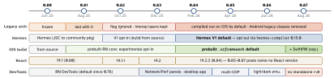

react-native · folio
In one line: A minor about every two months; the current and the two previous minors are supported. 0.82 (Oct 2025) runs only the New Architecture; later releases remove the legacy code, make Hermes V1 and prebuilt iOS binaries the default (0.84), share one animation backend (0.85), and generate a strict TypeScript API from source (0.87). 0.83 and 0.86 shipped no user-facing breaking changes.
Download PDF Print view LaTeX source


| RN | Headline | Breaking / removed / deprecated | Toolchain |
|---|---|---|---|
| 0.81 | last Legacy-arch release (= Expo SDK 54); targets Android 16 (API 36), edge-to-edge mandatory;
prebuilt iOS opt-in (RCT_USE_PREBUILT_RNCORE=1) | built-in JSC removed →
@react-native-community/javascriptcore; <SafeAreaView> deprecated | Node 20.19.4, Xcode 16.1 |
| 0.82 | New Arch only: newArchEnabled=false / RCT_NEW_ARCH_ENABLED=0 ignored; React 19.1.1;
DOM-like node APIs on refs (parentNode, getBoundingClientRect); Android debugOptimized;
web performance APIs (canary) | uncaught promise rejections now console.error;
Appearance.setColorScheme(null) → 'unspecified'; Gradle 9.0 | — |
| 0.83 | React 19.2 (<Activity>, useEffectEvent); DevTools Network + Performance panels, desktop app;
web perf APIs stable; IntersectionObserver canary; RCT_REMOVE_LEGACY_ARCH=1 (exp.) | none — first release without user-facing breaking changes | Expo SDK 55 |
| 0.84 | Hermes V1 default; prebuilt iOS binaries default; legacy arch compiled out (iOS);
React 19.2.3; HEIC; Android onKeyDown/onKeyUp; pressable <Text> gets role link | Android BridgeDevSupportManager, LazyReactPackage, CxxModuleWrapper removed;
ESLint 9 flat config supported | Node 22.11 |
| 0.85 | Shared Animation Backend (with Software Mansion) under Animated + Reanimated: layout props
with useNativeDriver (exp., 0.85.1+); Metro 0.84 with HTTPS/WSS | Jest preset →
@react-native/jest-preset; StyleSheet.absoluteFillObject removed;
setAccessibilityFocus deprecated | Node ≥ 20.19.4 (EOL dropped) |
| 0.86 | Android edge-to-edge fixes (measureInWindow, KeyboardAvoidingView); DevTools light/dark
emulation; repo moved to the react GitHub org (React Foundation) | none | — |
| 0.87 | Strict TypeScript API generated from source (root exports only); Metro 0.87 (source maps 2× faster, -50% memory); SwiftPM opt-in beside CocoaPods; AGP 9 | deep imports (Libraries/, src/private/) blocked; InteractionManager, StatusBar
backgroundColor/translucent removed; useColorScheme() may return null | Node 22.13; compileSdk 37 |
Upgrade path
- Still on the Legacy Architecture? Official route: go to 0.81 (or Expo SDK 54), turn the New Architecture on, fix libraries there, then 0.82. Libraries not yet migrated run through the interop layers, kept “for the foreseeable future”.
- Upgrade Helper (react-native-community upgrade-helper) = the template diff between two versions:
AppDelegate, Podfile, Gradle,package.json. Apply it by hand, one release at a time; read that release’s breaking-changes list. - Expo: bump the SDK (it pins RN), then
npx expo install --fixandnpx expo-doctor. SDK 54 = RN 0.81; SDK 55 = RN 0.83. - Bump native deps with RN (Reanimated, Screens, SVG…): they track the C++ APIs that each release removes.
In detail
- DOM-like refs (0.82): a host-component ref is a node with
parentNode,children,getBoundingClientRect(),ownerDocument.getElementById();measure/setNativePropsstill work. - Web performance APIs (stable 0.83):
performance.mark/measure,PerformanceObserver, Event Timing, Long Tasks — measure real users, not just the lab. - Shared Animation Backend (0.85): animation updates move into RN core, so Animated and Reanimated drive layout props (
width…) natively. - SwiftPM (0.87): only Xcode needed (no Ruby/CocoaPods); after a fresh clone and in CI run
npx react-native spmonce — thepod installanalogue.
Example — the config lines these releases touch
# 0.84+: build RN core from source again (debug a C++ crash)
RCT_USE_PREBUILT_RNCORE=0 bundle exec pod install
# 0.82+: Android debug build with C++ optimised (~60 FPS)
npx react-native run-android --mode debugOptimized
// 0.85+: jest.config.js
preset: '@react-native/jest-preset',
// 0.87: tsconfig escape hatch (bridge through 0.88)
"customConditions": ["react-native",
"react-native-legacy-deep-imports"]
# 0.87: SwiftPM instead of CocoaPods (experimental, once)
cd ios && npx react-native spm --deintegrateTraps
- “0.82 deleted the legacy code” — it ignores the flag; class removal started after, and legacy libraries still load through the interop layer.
- Jumping 0.79 → 0.84 in one go: legacy arch, JSC, prebuilt binaries, Hermes V1 and Node 22 all at once — impossible to bisect.
- New crash reports after 0.82 may be old bugs: unhandled rejections stopped being silent.
- Hermes V1 on 0.82/0.83 needs RN built from source — not with prebuilt core.
- 0.87 breaks
from 'react-native/Libraries/…'at type-check time. - 0.87:
useColorScheme()returnsnull, no longer'unspecified'— a=== 'unspecified'check silently stops matching. - 0.85 tests fail to start until the Jest preset is renamed — not an app bug.